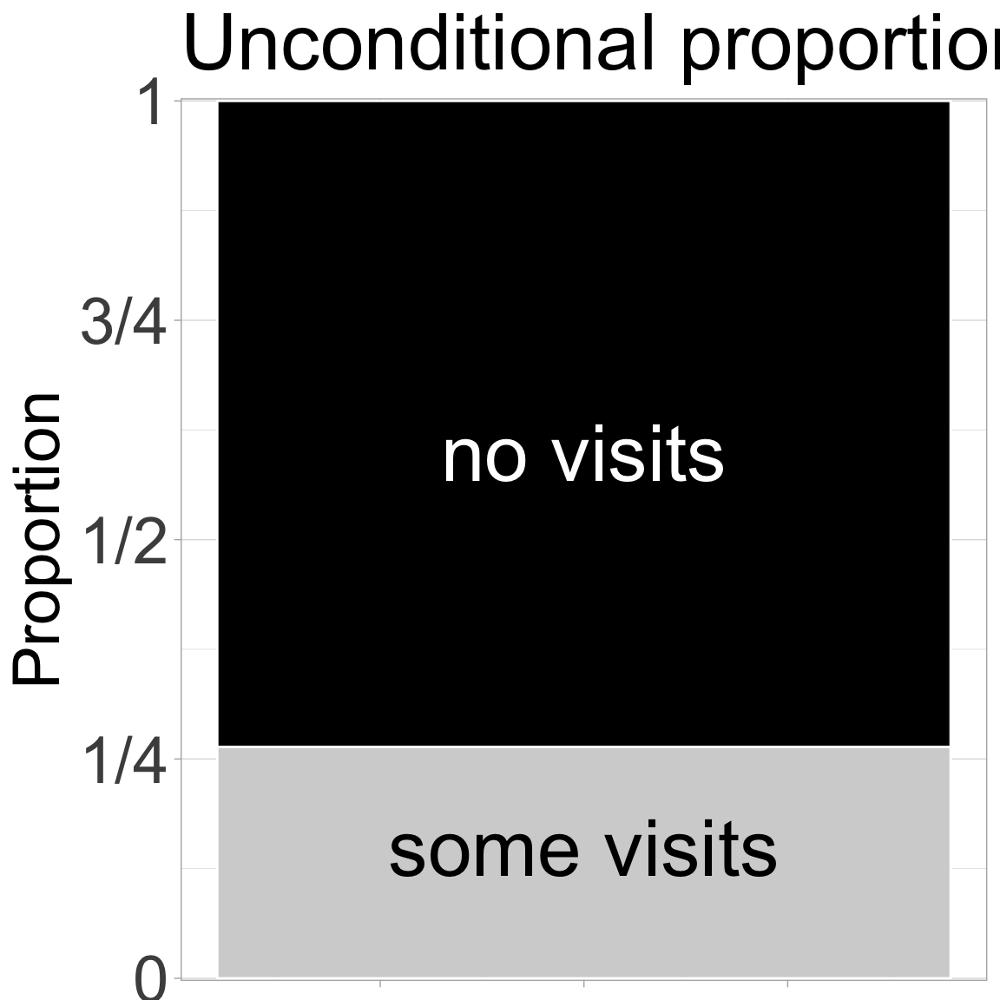

Motivating Scenario:
You are continuing your exploration of a fresh new dataset. You have figured out the shape, made the transformations you thought appropriate, and now want to summarize associations between two categorical variables.
Learning Goals: By the end of this subchapter, you should be able to:
Calculate and explain conditional proportion: You should be able to do this with basic math and with R code.
Explain the intuition of the multiplication rule for independent events
Calculate and explain the deviation from expectations under independence. Again you should be able to do this with basic math and with R code.
Unconditional proportions

Figure 1: The proportion of plats that did (light grey) or did not (black) receive a visit from a pollinator.
Before describing associations between categorical variables, let us revisit our univariate summaries. The proportion of pink flowers (or plants receiving visits) is simply the number of pink flowers (or plants receiving visits) divided by the total number of plants whose petal color is known (or the number of plants with pollinator observation data).
A proportion is essentially a mean where one outcome (e.g., pink flowers or being visited) is set to 1 and the other (e.g., white flowers or not being visited) is set to 0. Because visited is logical and R converts TRUE to 1 and FALSE to 0 when making a logical numeric, we can find this with the mean() function in R:
Figure 2: The association between petal color and pollinator visitation. Petal color is on the x-axis and visit status is shown within bars. We see that pink-flowered plants are more likely to receive a visit from a pollinator.
Figure 2 clearly shows that pink-flowered parviflora RILs planted at GC are more likely to be visited by a pollinator than are white-flowered RILs. At least, this is clear to me! Examine the plot yourself and
Articulate what feature of this plot shows the point above,
Describe what the plot would look like if there was no association between petal color and pollinator visitation.
A basic expectation from probability theory is that if two binary variables are independent (i.e. there is no statistical association between them), then the proportion of observations with both A and B equals the product of their proportions:
To evaluate how far our data deviate from independence, we can compare the actual joint proportion to what we’d expect if the two variables were independent. Assuming independence, \(\frac{49}{91}\times \frac{24}{91} = 0.142\) of plants would be pink-flowered and receive a visit from a pollinator, but in reality nearly a quarter of our plants are pink-flowered and visited!
Two standard summaries of associations between categorical variables – conditional proportions and covariance – can be used to quantify this deviation from expectations under independence.
Deviation from Independence: Conditional proportions
Perhaps the most straightforward summary of an association between categorical variables is the conditional proportion. This is the proportion of a given outcome, calculated separately for each value of the explanatory variable. Because a proportion is essentially a mean, a conditional proportion is essentially a conditional mean – so this calculation and logic follows that in the previous section.
As we see in our example, this calculation uses the same approach as above, but grouped by petal color.
By conventional notation, we write conditional proportions as \(P_\text{A|B}\), meaning ‘the proportion of A given B’ — where A is the outcome, B is the explanatory variable, and \(|\) means “given”. So:
In probability theory \(|\) means “given”. In R\(|\) means “or”. This is unfortunate and I am sorry. I wish I could change this.
The proportion of pink flowers receiving a visit from a pollinator is: \(P_\text{visited|pink} = \frac{22}{49} = 0.449\).
The proportion of white flowers receiving a visit from a pollinator is: \(P_\text{visited|white} = \frac{2}{42} = 0.0476\).
In summary, pink-flowered plants at site GC are roughly 10 times more likely to attract a pollinator than are white-flowered plants!
With these conditional proportions we can generalize the multiplication rule to non-independent variables:
\[P_{AB} = P_{B} \times P{A|B}\]
Applying this to our case recovers our actual observations!
Dividing the conditional proportions for two groups is technically called the “relative risk”.
Deviations from Independence - The Covariance
Our final summary of the association between categorical variables is the covariance. There are two ways to calculate the covariance. For now, we focus on the simplest way, and revisit this in the next section.
This formula is slightly wrong because it implicitly has a denominator of \(n\), not \(n-1\). To get the precise covariance, multiply this by \(\frac{n}{n-1}\) (this is known as Bessel’s correction). But when \(n\) is big, this is close enough.
The first estimate of the covariance is the difference between observations and expectations under independence – i.e. \(\text{Covariance}_{A,B} = P_{AB}-P_{A} \times P_{B}\).
Note that the code above introduced R’s cov() function to find the covariance.
Covariance gives us a numerical measure of how far our data deviate from what we’d expect under independence. In this case, the value is 0.10 — but is that meaningful? We’ll build up more intuition for interpreting covariances as we shift to continuous variables in the next section.
Additional summaries of associations between categorical variables.
At this point many textbooks would introduce two other standard summaries – odds ratios and relative risk (calculated above). I am not spending much time on them here. That is not because they are not useful (they are) – but because
They can get complicated.
They don’t lead naturally to the next steps in our learning journey.
Feel free to read more about each on Wikipedia (links above) or in conversation with your favorite large language model.